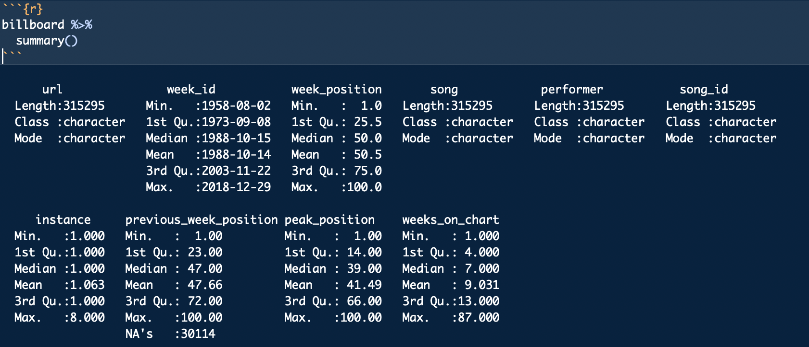

Appendix F — Exploring a new dataset
Not yet updated for Quarto
For those unfamiliar with exploring data, starting the process can be paralyzing.
How do I explore when I don’t know what I’m looking for? Where do I start?
Every situation is different, but there are some common techniques and some common sense that you can bring to every project.
F.1 Start by listing questions
It’s likely you’ve acquired data because you needed it to add context to a story or situation. Spend a little time at the beginning brainstorming as list of questions you want to answer. (You might ask a colleague to participate: the act of describing the data set will reveal questions for both of you.) I like to start my RNotebook with this list.
F.2 Understand your data
Before you start working on your data, make sure you understand what all the columns and values mean. Look at your data dictionary, or talk to the data owner to make sure you understand what you are working with.
To get a quick summary of all the values, you can use a function called summary() to give you some basic stats for all your data. Here is an example from the Billboard Hot 100 data we used in a class assignment.

A summary() will show you the data type for each column, and then for number values it will show you the min, max, median, mean and other stats.
F.3 Pay attention to the shape of your data
Is your data long or wide?
Wide data adds new observations as columns, with the headers describing the observation. Official reports and Excel files from agencies are often in this format:
| Country | 2018 | 2017 |
|---|---|---|
| United States | 20,494,050 | 19,390,604 |
| China | 13,407,398 | 12,237,700 |
Long data is where each row in the data is a single observation, and each column is an attribute that describes that observation. Data-centric languages and applications like R and Tableau typically prefer this format.
| Country | Year | GDP |
|---|---|---|
| United States | 2018 | 20,494,050 |
| United States | 2017 | 19,390,604 |
| China | 2018 | 13,407,398 |
| China | 2017 | 12,237,700 |
The shape of the data will determine how you go about analyzing it. They are both useful in different ways. Wide data allows you to calculate columns to show changes. Visualization programs will sometimes want a long format to more easily categorize values based on the attributes.
You can pivot your data with pivot_longer() and pivot_wider to change the shape of your data.
F.4 Counting and aggregation
A large part of data analysis is counting and sorting, or filtering and then counting and sorting. Depending on the program you are using you may approach it differently but think of these concepts:
F.4.1 Counting rows based on a column
If you are just counting the number of rows based on the values within a column (or columns), then count() is the key. When you use count() like this, a new column called n is created to hold the count of the rows. You can rename n with the name = "new_name" argument, and you can change the sorting to descending order using the sort = TRUE argument.
In this example, we are counting the number of rows for each princess in our survey data, the arranging them in descending order.
survey %>%
count(princess, name = "votes", sort = TRUE)| princess | votes |
|---|---|
| Mulan | 14 |
| Rapunzel (Tangled) | 7 |
| Jasmine (Aladdin) | 6 |
| Ariel (Little Mermaid) | 5 |
| Tiana (Princess and the Frog) | 2 |
| Aurora (Sleeping Beauty) | 1 |
| Belle (Beauty and the Beast) | 1 |
| Merida (Brave) | 1 |
| Snow White | 1 |
F.4.2 Sum, mean and other aggregations
If you want to aggregate values in a column, like adding together values, or to find a mean or median, then you will want to use the GSA combination: group_by() on your columns of interest, then use summarize() to aggregate the data in the manner you choose, like sum(), mean() or the number of rows n(). You can then use arrange() to order the result however you want.
Here is an example where we use group_by and summarize() to add together values in our mixed beverage data. In this case, we had multiple rows for each name/address group, but we wanted to add together total_receipts() for each group.
receipts %>%
group_by(location_name, location_address) %>%
summarize(
total_sales = sum(total_receipts)
) %>%
arrange(desc(total_sales))| location_name | location_address | total_sales |
|---|---|---|
| WLS BEVERAGE CO | 110 E 2ND ST | 35878211 |
| RYAN SANDERS SPORTS | 9201 CIRCUIT OF THE AMERICAS BLVD | 20714630 |
| W HOTEL AUSTIN | 200 LAVACA ST | 15435458 |
| ROSE ROOM/ 77 DEGREE | 11500 ROCK ROSE AVE | 14726420 |
| THE DOGWOOD DOMAIN | 11420 ROCK ROSE AVE STE 700 | 14231072 |
The result will have all the columns you included in the group, plus the columns you create in your summarize statement. You can summarize more than one thing at a time, like the number of rows numb_rows = n() and average of the values average = mean(column_name).
F.4.3 Creating columns to show difference
Sometimes you need to perform math on two columns to show the difference between them. Use mutate() to create the column and do the math. Here’s a pseudo-code example:
new_or_reassigned_df <- df %>%
mutate(
new_col_name = (part_col / total_col) * 100
)F.5 Cleaning up categorical data
If you are going to count our summarize rows based on categorical data, you should make sure the values in that column are clean and free of typos and values that might better be combined.
Some strategies you might use:
- Create a
count()of the column to show all the different values and how often they show up. - You might want to use
mutate()to create a new column and then update the values there. Or you might userecode()the set specific values to new values.
If you find you have hundreds of values to clean, then come see me. There are some other tools like OpenRefine that you can learn fairly quickly to help.
F.6 Time as a variable
If you have dates in your data, then you almost always want to see change over time for different variables.
- Summarize records by year or month as appropriate and create a Bar or Column chart to show how the number of records for each time period.
- Do you need to see how different categories of data have changed over time? Consider a line chart that shows those categories in different colors.
- If you have the same value for different time periods, do might want to see the change or percent change in those values. You can create a new column using
mutate()to do the math and show the difference.
F.7 Explore the distributions in your data
We didn’t talk about histograms in class, but sometimes you might want see the “distribution” of values in your data, i.e. how the values vary within the column. Are many of the values similar? A histogram can show this.
Here is an example of a histogram use wells data exploring the borehole_depth (how deep the well is). Each bar represents the number of wells broken down in 100ft depth increments (set with binwidth=100). So the first bar shows that most of the wells (more than 7000) are less than 100 feet deep.
wells %>%
ggplot(aes(x = borehole_depth)) +
geom_histogram(binwidth = 100)
While there are wells deeper than 1000 feet, they are so few they don’t even show on the graphic.
You’ll rarely use a histogram as a graphic with a story because they are more difficult to explain to readers. But they do help you to understand how much values differ within a column.
F.7.1 More on histograms
If you google around, you might see other ways to create a histogram, including hist() and qplot(). You might stick with the ggplot’s geom_histogram() since you already are familiar with the syntax.
- Tutorial on histograms using ggplot from DataCamp.
- R Cookbook on histograms.
F.8 Same ideas using spreadsheets
Check out this resource by David Eads on the same topic, with some more specifics about Google Sheets.